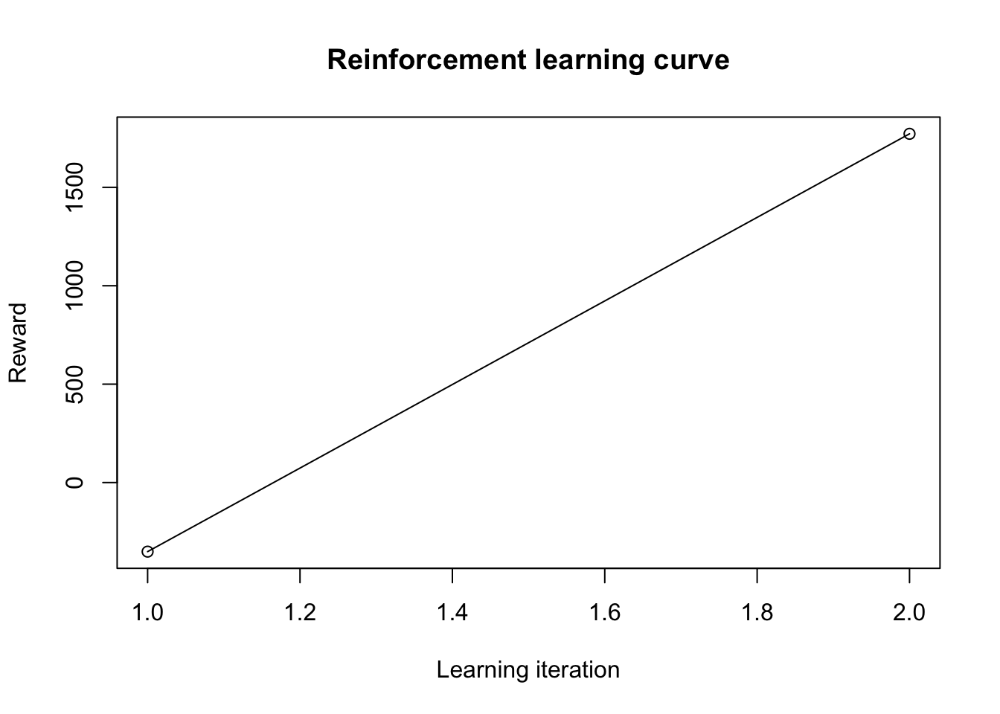

Lesson 10
Reinforcement Learning
Learning Objectives
After this lesson, students will be able to:
Describe the reinforcement learning paradigm in machine learning and how it compares and contrasts with supervised and unsupervised learning.
Use
ReinforcementLearningR package.
Readings, etc.
For this lesson, refer to the following readings, etc.:
Read chapter 1 from of Reinforcement Learning: An Introduction by Sutton and Barto (Sutton and Barto 2018). This book is available online here.
View reinforcement learning video by Crash Coruse AI on YouTube.
Overview
Reinforcement learning is a paradigm in machine learning that is concerned with how an agent should take actions in an environment so as to maximize some notion of cumulative reward. Basically, the agent learns to interact with the environment by trial and error. The agent is not told which actions to take, but instead must discover which actions yield the most reward by trying them. In the most interesting and challenging cases, actions may affect not only the immediate reward but also the next situation and, through that, all subsequent rewards. These two characteristics—trial-and-error search and delayed reward—are the two most important distinguishing features of reinforcement learning.
To learn more about reinforcement learning, you can work through the guided tutorial here.
We also recommend reading chapter 1 from of Reinforcement Learning: An Introduction by Sutton and Barto (Sutton and Barto 2018). This book is available online here.
An Example Using ReinforcementLearning R Package
This section demonstrates the capabilities of the ReinforcementLearning package with the help of a practical example. Another example is developed in the guided tutorial here.
Our practical example aims at teaching optimal movements to a robot in a grid-shaped maze.
Here the agent must navigate from a random starting position to a final position on a simulated \(2 \times 2\) grid. The grid looks as follows:
| s1 | Wall | s4 |
| s2 | Open | s3 |
Each cell on the grid reflects one state, yielding a total of 4 different states. In each state, the agent can perform one out of four possible actions: to move up, down, left, or right, with the only restriction being that it must remain on the grid. In other words, the grid is surrounded by a wall, which makes it impossible for the agent to move off the grid. A wall between s1 and s4 hinders direct movements between these states. Finally, the reward structures is as follows: each movement leads to a negative reward of -1 in order to penalize routes that are not the shortest path. If the agent reaches the goal position, it earns a reward of 10.
We first define the sets of available states (states) and actions (actions).
# Define state and action sets
states <- c("s1", "s2", "s3", "s4")
actions <- c("up", "down", "left", "right")We then rewrite the above problem formulation into the following environment function. As previously mentioned, this function must take a state and an action as input. The if-conditions determine the current combination of state and action. In our example, the state refers to the agent’s position on the grid and the action denotes the intended movement. Based on these, the function decides upon the next state and a numeric reward. These together are returned as a list.
# Load built-in environment function for 2x2 gridworld
env <- gridworldEnvironment
print(env)function (state, action)
{
next_state <- state
if (state == state("s1") && action == "down")
next_state <- state("s2")
if (state == state("s2") && action == "up")
next_state <- state("s1")
if (state == state("s2") && action == "right")
next_state <- state("s3")
if (state == state("s3") && action == "left")
next_state <- state("s2")
if (state == state("s3") && action == "up")
next_state <- state("s4")
if (next_state == state("s4") && state != state("s4")) {
reward <- 10
}
else {
reward <- -1
}
out <- list(NextState = next_state, Reward = reward)
return(out)
}
<bytecode: 0x158df5a80>
<environment: namespace:ReinforcementLearning>After having specified the environment function, we can use the built-in sampleExperience() function to sample observation sequences from the environment. The following code snippet generates a data frame data containing 1000 random state-transition tuples \((s_{i},a_{i},r_{i+1},s_{i+1})\).
# Sample N = 1000 random sequences from the environment
data <- sampleExperience(N = 1000,
env = env,
states = states,
actions = actions)
head(data) State Action Reward NextState
1 s4 left -1 s4
2 s2 up -1 s1
3 s4 right -1 s4
4 s1 right -1 s1
5 s3 up 10 s4
6 s2 left -1 s2We can now use the observation sequence in data in order to learn the optimal behavior of the agent. For this purpose, we first customize the learning behavior of the agent by defining a control object. We follow the default parameter choices and set the learning rate alpha to 0.1, the discount factor gamma to 0.5 and the exploration greediness epsilon to 0.1. Subsequently, we use the ReinforcementLearning() function to learn the best possible policy for the the input data.
# Define reinforcement learning parameters
control <- list(alpha = 0.1, gamma = 0.5, epsilon = 0.1)
# Perform reinforcement learning
model <- ReinforcementLearning(data,
s = "State",
a = "Action",
r = "Reward",
s_new = "NextState",
control = control)The ReinforcementLearning() function returns an rl object. We can evoke computePolicy(model) in order to display the policy that defines the best possible action in each state. Alternatively, we can use print(model) in order to write the entire state-action table to the screen, i.e. the Q-value of each state-action pair. Evidently, the agent has learned the optimal policy that allows it to take the shortest path from an arbitrary starting position to the goal position s4.
# Print policy
computePolicy(model) s1 s2 s3 s4
"down" "right" "up" "right" # Print state-action function
print(model)State-Action function Q
right up down left
s1 -0.7318882 -0.7007791 0.7204639 -0.7190629
s2 3.5966366 -0.7266456 0.7799772 0.7426842
s3 3.5912954 9.1711692 3.5924400 0.7641220
s4 -1.7695876 -1.8309604 -1.7882949 -1.8294700
Policy
s1 s2 s3 s4
"down" "right" "up" "right"
Reward (last iteration)
[1] -296Ultimately, we can use summary(model) to inspect the model further. This command outputs additional diagnostics regarding the model such as the number of states and actions. Moreover, it allows us to analyze the distribution of rewards. For instance, we see that the total reward in our sample (i.e. the sum of the rewards column r) is highly negative. This indicates that the random policy used to generate the state transition samples deviates from the optimal case. Hence, the next section explains how to apply and update a learned policy with new data samples.
# Print summary statistics
summary(model)
Model details
Learning rule: experienceReplay
Learning iterations: 1
Number of states: 4
Number of actions: 4
Total Reward: -296
Reward details (per iteration)
Min: -296
Max: -296
Average: -296
Median: -296
Standard deviation: NAWe now apply an existing policy to unseen data in order to evaluate the out-of-sample performance of the agent. The following example demonstrates how to sample new data points from an existing policy. The result yields a column with the best possible action for each given state.
# Example data
data_unseen <- data.frame(State = c("s1", "s2", "s1"),
stringsAsFactors = FALSE)
# Pick optimal action
data_unseen$OptimalAction <- predict(model, data_unseen$State)
data_unseen State OptimalAction
1 s1 down
2 s2 right
3 s1 downFinally, one can update an existing policy with new observational data. This is beneficial when, for instance, additional data points become available or when one wants to plot the reward as a function of the number of training samples. For this purpose, the ReinforcementLearning() function can take an existing rl model as an additional input parameter. Moreover, it comes with an additional pre-defined action selection mode, namely \(\epsilon\)-greedy, thereby following the best action with probability \(1−\epsilon\) and a random one with \(\epsilon\).
# Sample N = 1000 sequences from the environment
# using epsilon-greedy action selection
data_new <- sampleExperience(N = 1000,
env = env,
states = states,
actions = actions,
actionSelection = "epsilon-greedy",
model = model,
control = control)
# Update the existing policy using new training data
model_new <- ReinforcementLearning(data_new,
s = "State",
a = "Action",
r = "Reward",
s_new = "NextState",
control = control,
model = model)The following code snippet shows that the updated policy yields significantly higher rewards as compared to the previous policy. These changes can also be visualized in a learning curve via plot(model_new).
# Print result
print(model_new)State-Action function Q
right up down left
s1 -0.672282 -0.6553020 0.7716232 -0.6498042
s2 3.543147 -0.6568728 0.7762635 0.7576520
s3 3.575227 9.0862229 3.5662817 0.7681950
s4 -1.913763 -1.8576439 -1.8275648 -1.8494374
Policy
s1 s2 s3 s4
"down" "right" "up" "down"
Reward (last iteration)
[1] 1563# Plot reinforcement learning curve
plot(model_new)
References
Sutton, Richard S, and Andrew G Barto. 2018. Reinforcement Learning: An Introduction. MIT press.
Expand for Session Info
─ Session info ───────────────────────────────────────────────────────────────
setting value
version R version 4.3.2 (2023-10-31)
os macOS Sonoma 14.1.1
system aarch64, darwin20
ui X11
language (EN)
collate en_US.UTF-8
ctype en_US.UTF-8
tz America/New_York
date 2023-11-20
pandoc 3.1.9 @ /opt/homebrew/bin/ (via rmarkdown)
quarto 1.3.450 @ /usr/local/bin/quarto
─ Packages ───────────────────────────────────────────────────────────────────
package * version date (UTC) lib source
broom * 1.0.5 2023-06-09 [1] CRAN (R 4.3.0)
dials * 1.2.0 2023-04-03 [1] CRAN (R 4.3.0)
dplyr * 1.1.4 2023-11-17 [1] CRAN (R 4.3.1)
forcats * 1.0.0 2023-01-29 [1] CRAN (R 4.3.0)
ggplot2 * 3.4.4 2023-10-12 [1] CRAN (R 4.3.1)
ggthemes * 4.2.4 2021-01-20 [1] CRAN (R 4.3.0)
infer * 1.0.5 2023-09-06 [1] CRAN (R 4.3.0)
kableExtra * 1.3.4 2021-02-20 [1] CRAN (R 4.3.0)
lubridate * 1.9.3 2023-09-27 [1] CRAN (R 4.3.1)
modeldata * 1.2.0 2023-08-09 [1] CRAN (R 4.3.0)
parsnip * 1.1.1 2023-08-17 [1] CRAN (R 4.3.0)
purrr * 1.0.2 2023-08-10 [1] CRAN (R 4.3.0)
readr * 2.1.4 2023-02-10 [1] CRAN (R 4.3.0)
recipes * 1.0.8 2023-08-25 [1] CRAN (R 4.3.0)
ReinforcementLearning * 1.0.5 2020-03-02 [1] CRAN (R 4.3.0)
rsample * 1.2.0 2023-08-23 [1] CRAN (R 4.3.0)
scales * 1.2.1 2022-08-20 [1] CRAN (R 4.3.0)
sessioninfo * 1.2.2 2021-12-06 [1] CRAN (R 4.3.0)
stringr * 1.5.1 2023-11-14 [1] CRAN (R 4.3.1)
tibble * 3.2.1 2023-03-20 [1] CRAN (R 4.3.0)
tidymodels * 1.1.1 2023-08-24 [1] CRAN (R 4.3.0)
tidyr * 1.3.0 2023-01-24 [1] CRAN (R 4.3.0)
tidyverse * 2.0.0 2023-02-22 [1] CRAN (R 4.3.0)
tune * 1.1.2 2023-08-23 [1] CRAN (R 4.3.0)
workflows * 1.1.3 2023-02-22 [1] CRAN (R 4.3.0)
workflowsets * 1.0.1 2023-04-06 [1] CRAN (R 4.3.0)
yardstick * 1.2.0 2023-04-21 [1] CRAN (R 4.3.0)
[1] /Library/Frameworks/R.framework/Versions/4.3-arm64/Resources/library
──────────────────────────────────────────────────────────────────────────────
Reuse
CC BY-NC-SA 4.0